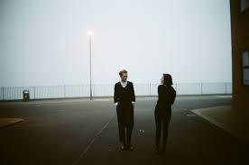

Lebanon Hanover é uma banda germano britânica de dark wave formada em 2010, em Sunderland, Inglaterra. Seu álbum de estreia La Fete Triste foi lançado em 2011. A dupla ganhou atenção pela primeira vez com o álbum de 2012, The World Is Getting Colder, pela Fabrika Records.
